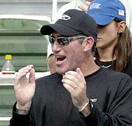

Previous: The Favorite and the Underdog | 🏠 Strategy Home | Next: The Four Components of Match Play -Tactics and Patterns
The Four Components of Match Play:
Comprehensive unified tennis knowledge base — Fundamentals, Stroke Analysis, Reference Library, and more
The Four Components of Match Play:
Strategy and Game Style
By Larry Jurovich
Would you confuse a swinging volley with a service return?
Imagine if what one player called a drop shot, another player called a lob. Or if you hit a swinging volley and someone tried to tell you that you hit actually a return of serve.
That may sound ridiculous, but this is exactly the kind of confusion that follows when coaches and players start to talk about the components of match play. I know this because my work takes me to see hundreds of coaches all over the world at dozens of academies and coaching conferences.
Of course, there are differences in terminology everywhere. For example, what the British call "trading" other coaches call "rallying". But most of these differences don't create fundamental misunderstandings.
However, these misunderstandings do emerge when we start to use terms like "strategy" or "game style" or "tactics." This is because different coaches use the same term to mean different things. Or they use different terms interchangeably at different times. This makes it difficult to differentiate meanings.
In this new series for Tennisplayer, I want to try to create some clarity regarding these terminology issues, by identifying and defining four components in match play. These four components are: strategy, game style, tactics, and patterns.
Four Components of Match Play:
Strategy
Gamestyle
Tactics
Patterns
I am certainly not on a mission to force everyone to adopt my terminology or explanations. But what I do want to do is elucidate what these four common terms mean to me and suggest how this framework can help us understand and improve how the game is played at all levels.
In this first article I'll outline my definitions of the first two components: Strategy and Game Style. Then in the second article, I'll move on to Tactics and Patterns.
Once we define these terms, in subsequent articles we'll move on to the really exciting stuff - analyzing how these four components are used by the top players like Roger Federer and Rafael Nadal in actual match play, using the incredible footage in the Tennisplayer Patterns Archive.
We'll see how these players build their points. We'll see what we can learn from them, and how it applies to players at all levels.

A coach like Brad Gilbert is so valuable due to his ability to assess opponents.
Strategy
The first component is Strategy. Strategy is the overall plan for playing a match. Strategy is the overarching concept that encompasses the other components.
There are many factors that can go into determining strategy. Consider the hours of game film that football coaches watch to analyse opponents and determine the most effective strategy for the upcoming match.
But what are the factors that need to be considered in tennis?
The first is the opponent. Cleary this is critical and why a coach like Brad Gilbert is famous for his ability to assess opponents. Understanding how best to get at your opponents' weaknesses and avoid their strengths will increase the chance that they will not play as well, and help you impose your game on theirs.
The second factor in strategy is environment. Though commonly overlooked--especially by inexperienced and lower-level players--environmental factors such as court surface, weather, altitude, and type of ball play a major role in determining strategy.
Does your second serve go through shaky periods?
Environment is critical because it impacts how fast or slow the ball travels both through the air and after the bounce. Different environments produce either shorter or longer points, and these differences can be very substantial.
The length of the exchanges has a critical impact on shot making, movement, speed, and endurance. There is a huge difference when points go on for 2 or 3 balls compared to 10. For this reason, there can be major differences in devising strategy against the same opponent in different environments.
The third component is you. Hopefully as a player you have a clear idea of your game style, the second component we will discuss below.
But beyond this, are you aware of how you are actually feeling before a given match? Are you at the end of a long tour in South America or just at the end of a long week at work and feeling physically spent?
Is your confidence riding high or do you have a gut feeling every time you take a risk you are going to miss? Has your second serve been shaky under pressure? It's important to take account of your physical and mental strength at the moment when you create a strategy for a given match.
There's a reason to play high balls to Roger's backhand.
These are some of the important qualifying factors in any strategy, but now let's look at some of the actual strategies themselves.
Exploit the Weakness
The first strategy is learning to exploit weakness. Pro players know each other's strengths and weaknesses intimately. There is a reason Rafael Nadal plays so many balls high to Federer's backhand.
But sometimes at the club level, players never think to evaluate the weaknesses in their opponents, even someone they may play on a regular basis for years. So, if you haven't done this before, ask the basic strategic question. Does your opponent have a weaker side off the ground?
Almost all players do, and at the club level, it is usually the backhand. Often at lower levels the weakness is highly pronounced. Something as simple as keeping most balls to the weaker side can have a miraculous impact on the outcome of many matches.
Move the Opponent
The second basic strategy is controlling space and maximizing the amount of court your opponent must cover. This is even more effective when playing somebody who has suspect movement or fitness. To develop it, however, you most also possess high quality cross courts, short angles, and also, the ability to change direction consistently and hit accurately down the line.
Agassi: controlling space and making the opponent cover.
If you can move your opponent side to side, create openings, and hit into the open spaces you create, you will not only generate winners, but you will also draw more errors from your opponent and drain him both physically and mentally. Andre Agassi is the classic example, positioning himself on the T and running players from "Bradenton to Vegas" as he used to describe it.
Time Pressure
Taking time from your opponent is a third fundamental strategy. This affects an opponent's rhythm and shot production, and also creates anxiety when he is unable to play his game or execute his own strategy.
Taking the ball early creates time pressure.
There are three main ways that players can put time pressure on an opponent. It can be done through high velocity exchanges the way Maria Sharapova plays at her best. It can be done by taking the ball very early like a Davydenko. Or you can pressure your opponent on time by going to the net and forcing him to attempt a pass - on either a regular or an intermittent basis.
Change of Rhythm
Changing rhythms and mixing in drop shots - another strategy option.
Changing rhythms is a fourth basic strategy. This also disrupts the timing of your opponent. This is a strategy that is commonly employed by Andy Murray. It can be a very effective strategy when playing big hitters or when wind or court conditions make timing more difficult.
Mixing speeds, arcs and spins frustrates players who prefer steady exchanges or like to try for regular winners. Murray can hit slower slice backhands, then suddenly attack with a huge forehand. Or hit surprise drop shots and mix in net approaches.
Players feel off balance and question what to expect next. Murray shows how effective it can be at the pro level, and for the club player the benefits are probably even greater.
Game style
The second component is Game Style. Which strategy or combination of strategies should you employ against a given opponent? That depends on the characteristics of your Game Style.
Game Style is the range of ways you are capable of playing. It is based on the strengths and weaknesses you have and therefore determines your ability to use various strategies.
Does your Game Style include all court capability?
A strategy, obviously, can only succeed if the player has the ability to implement it. It doesn't help to formulate a winning strategy if a player cannot actually use it in match play. This is why strategy must be based on game style capabilities.
So, let's look at a few of the common game styles in both the pro and club games. This list is not meant to be exhaustive but just to give an idea of the concept and sketch the elements of a few of the more common styles.
All Court
The first game style is the All Court Player. This player is equally comfortable at the back and front of the court and has a very good transition game. He may not be overwhelmingly dominant in any one particular phase or with any particular shot, but he is flexible in where he plays on the court and how.
In the pro game, they are rarer and rarer. But Andy Murray is a great example of how successful this style can be. Roger Federer's game as we will discuss, transcends any one game style description, but he is another obvious example of how all court style can work at the highest levels of the game.
Aggressive baseline play: constant pressure off the ground.
Aggressive Baseliner
The second game style is the Aggressive Baseliner. This player likes to put constant pressure on his opponents by taking their time away, making them cover more space, and hurting them with huge velocity.
Aggressive baseliners are often equally capable of pressuring an opponent with their forehand or backhand. Robin Soderling is an example of a player who can do this off either wing, hitting through opponents with superior pace or creating weak replies that can be crushed into the open court.
Big Forehand
A third game style is the Big Forehand. This player likes to dictate play with his forehand and looks for every opportunity to use this shot. Usually, this player will look to move around many or most backhands and hit his forehand inside out and then inside in.
The big forehand player overwhelms opponents with huge shot making.
Fernando Gonzalez is a great example. He doesn't play up as far in the court as many aggressive players, but looks to punish forehands and overwhelm opponents by dominating inside out rallies, creating openings including inside in winners.
Sniper
A fourth style is the Counter Puncher, or Sniper. This player is very patient and willing to stay in rallies for extended periods. Tenacity is a major weapon.
But if his opponent takes risks the Sniper looks to turn that risk against him. He does this by using the opponent's ball speed or placement to counterattack, hitting aggressively himself or creating an even better placement or angle.
The Sniper may allow or even encourage an opponent to attempt to strike first, but his response is often more effective and aggressive than the original attack. By trying to open the court, opponents often play right into the strengths of this game style.
The Sniper can answer attack with devastating counterattack.
In the modern pro game, Rafael Nadal is the uber example here. His ability to defend tirelessly but then counterattack on angles or jump on weak replies makes him very, very difficult to play both physically and mentally.
Combo
Of course, players can also combine some or all of these game styles. Roger Federer is the ultimate example. Federer is an all-court player. But he also has a huge forehand. He also has exceptional defensive and counterattacking skills.
Federer can win points with any of these game style elements or with a mixture in the same match. For example: Changing speeds and spins and going to net. Dominating with his forehand. Or breaking down attacking players with his underrated defense and counterattack.
Obviously, the more components and flexibility in your game style, the greater your ability to implement different strategies, and to vary your strategies against different opponents.
Organic development leads to mastery of your game style.
Caution!
It is very important for all players to develop their gamestyles organically. Few or no players have the variety of a Roger Federer. Game style can't be forced.
But, unfortunately, all too often game style is like Medical School. Kids don't make the decision based on their own likes and qualities. Game style is often forced on young players by adults, either parents or coaches, or through peer pressures in their tennis environment. Mommy and/or Daddy want them to be a doctor. Or an aggressive baseliner.
These players try to become players they are not, based on expectations coming from others. Almost every coach has met a new player who says he or she an aggressive baseliner but watching them play observes the player never gets within 10 ft of the baseline.
It is vital to understand and respect that every player's game style will be determined largely by his or her physical and mental attributes. This is often difficult for coaches, as well as parents, to understand. This is because they filter what they see through their own playing experience, instead of perceiving the reality of who their player may actually be.
Is it natural for you to take the ball early?
Some questions to ask in assessing and formulating game style. Does the player have the speed and stamina to stay in long points? Is he risk adverse or more of a gambler? Does he like to change timing and rhythm? Is it natural to take the ball early? Does he like being at the net?
Individual qualities should ultimately lead to a choice of game style, not just the demands of parents, the fashionable play of other players, or the beliefs of a coach who may have played a certain way himself in his own day.
So that covers our first two components. Next, we'll look at Tactics and Patterns. Stay Turned!
Larry Jurovich is an international coaching consultant specializing in coaching, player, and program development. As the Head of Coach Education and Performance Manager, he led the restructuring and development of the British Lawn Tennis Association coach education program and tutor workforce.
Larry has served as a member of the ITF Coach Education Task force, worked as a leader at the Tennis Canada National Training Center, and helped develop Canadian players who have won dozens of national titles, as well as personally coaching Davis Cup and tour players. He speaks internationally and has presented at conferences and workshops in 10 countries.
Source: tennisplayer.net archive — The Four Components of Match Play - STrategy and Game Style.docx (John Yandell teaching library, 2002-2022). Extracted and rendered as HTML for Tennis Future Lab.